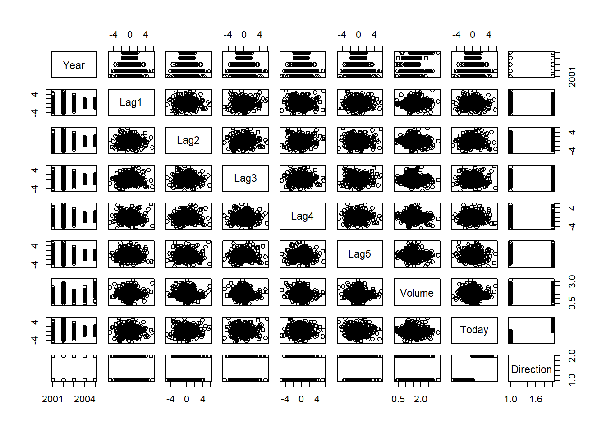

Section 13 Lab: Classification Methods
13.1 The Stock Market Data

13.1.1 Data Overview
The Smarket data set consists of percentage returns for the S&P 500 stock index over 1, 250 days, from the beginning of 2001 until the end of 2005. For each date, we have recorded the percentage returns for each of the five previous trading days, Lag1 through Lag5.
We have also recorded:
Volume: the number of shares traded on the previous day, in billions.Today: the percentage return on the date in question.Direction: whether the market wasUporDownon this date.
Our goal is to predict Direction (a qualitative response) using the other features.
library(ISLR) # load the librarynames(Smarket) # get the column names## [1] "Year" "Lag1" "Lag2" "Lag3" "Lag4" "Lag5"
## [7] "Volume" "Today" "Direction"dim(Smarket) # data dimension overview## [1] 1250 9summary(Smarket) # overall info of the data set## Year Lag1 Lag2 Lag3
## Min. :2001 Min. :-4.922000 Min. :-4.922000 Min. :-4.922000
## 1st Qu.:2002 1st Qu.:-0.639500 1st Qu.:-0.639500 1st Qu.:-0.640000
## Median :2003 Median : 0.039000 Median : 0.039000 Median : 0.038500
## Mean :2003 Mean : 0.003834 Mean : 0.003919 Mean : 0.001716
## 3rd Qu.:2004 3rd Qu.: 0.596750 3rd Qu.: 0.596750 3rd Qu.: 0.596750
## Max. :2005 Max. : 5.733000 Max. : 5.733000 Max. : 5.733000
## Lag4 Lag5 Volume Today
## Min. :-4.922000 Min. :-4.92200 Min. :0.3561 Min. :-4.922000
## 1st Qu.:-0.640000 1st Qu.:-0.64000 1st Qu.:1.2574 1st Qu.:-0.639500
## Median : 0.038500 Median : 0.03850 Median :1.4229 Median : 0.038500
## Mean : 0.001636 Mean : 0.00561 Mean :1.4783 Mean : 0.003138
## 3rd Qu.: 0.596750 3rd Qu.: 0.59700 3rd Qu.:1.6417 3rd Qu.: 0.596750
## Max. : 5.733000 Max. : 5.73300 Max. :3.1525 Max. : 5.733000
## Direction
## Down:602
## Up :648
##
##
##
## pairs(Smarket) 
# produces a matrix that contains all of the pairwise correlations among the predictors in a data set, exclude the Direction variable
cor(Smarket[, -9]) ## Year Lag1 Lag2 Lag3 Lag4
## Year 1.00000000 0.029699649 0.030596422 0.033194581 0.035688718
## Lag1 0.02969965 1.000000000 -0.026294328 -0.010803402 -0.002985911
## Lag2 0.03059642 -0.026294328 1.000000000 -0.025896670 -0.010853533
## Lag3 0.03319458 -0.010803402 -0.025896670 1.000000000 -0.024051036
## Lag4 0.03568872 -0.002985911 -0.010853533 -0.024051036 1.000000000
## Lag5 0.02978799 -0.005674606 -0.003557949 -0.018808338 -0.027083641
## Volume 0.53900647 0.040909908 -0.043383215 -0.041823686 -0.048414246
## Today 0.03009523 -0.026155045 -0.010250033 -0.002447647 -0.006899527
## Lag5 Volume Today
## Year 0.029787995 0.53900647 0.030095229
## Lag1 -0.005674606 0.04090991 -0.026155045
## Lag2 -0.003557949 -0.04338321 -0.010250033
## Lag3 -0.018808338 -0.04182369 -0.002447647
## Lag4 -0.027083641 -0.04841425 -0.006899527
## Lag5 1.000000000 -0.02200231 -0.034860083
## Volume -0.022002315 1.00000000 0.014591823
## Today -0.034860083 0.01459182 1.000000000There appears to be little correlation between today’s returns and previous days’ returns as the correlations between the lag variables and today’s returns are close to zero.
The only substantial correlation is between Year and Volume.
By plotting the data, which is ordered chronologically, we see that Volume is increasing over time. In other words, the average number of shares traded daily increased from 2001 to 2005.
attach(Smarket)
plot(Volume) ### Logistic Regression
Next, we will fit a logistic regression model in order to predict Direction using Lag1 through Lag5 and Volume. The glm() function can be used to fit glm() many types of generalized linear models, including logistic regression. The generalized linear model syntax of the glm() function is similar to that of lm(), except that we must pass in the argument family = binomial in order to tell R to run a logistic regression rather than some other type of generalized linear model.
glm.fits <- glm(Direction ∼ Lag1 + Lag2 + Lag3 + Lag4 + Lag5 + Volume, data = Smarket, family = binomial)
summary(glm.fits)##
## Call:
## glm(formula = Direction ~ Lag1 + Lag2 + Lag3 + Lag4 + Lag5 +
## Volume, family = binomial, data = Smarket)
##
## Deviance Residuals:
## Min 1Q Median 3Q Max
## -1.446 -1.203 1.065 1.145 1.326
##
## Coefficients:
## Estimate Std. Error z value Pr(>|z|)
## (Intercept) -0.126000 0.240736 -0.523 0.601
## Lag1 -0.073074 0.050167 -1.457 0.145
## Lag2 -0.042301 0.050086 -0.845 0.398
## Lag3 0.011085 0.049939 0.222 0.824
## Lag4 0.009359 0.049974 0.187 0.851
## Lag5 0.010313 0.049511 0.208 0.835
## Volume 0.135441 0.158360 0.855 0.392
##
## (Dispersion parameter for binomial family taken to be 1)
##
## Null deviance: 1731.2 on 1249 degrees of freedom
## Residual deviance: 1727.6 on 1243 degrees of freedom
## AIC: 1741.6
##
## Number of Fisher Scoring iterations: 3The smallest p-value here is associated with Lag1. The negative coefficient for this predictor suggests that if the market had a positive return yesterday, then it is less likely to go up today. However, at a value of 0.15, the \(p\) value is still relatively large, and so there is no clear evidence of a real association between Lag1 and Direction.
We use the coef() function in order to access just the coefficients for this fitted model. We can also use the summary() function to access particular aspects of the fitted model, such as the p-values for the coefficients.
coef(glm.fits)## (Intercept) Lag1 Lag2 Lag3 Lag4 Lag5
## -0.126000257 -0.073073746 -0.042301344 0.011085108 0.009358938 0.010313068
## Volume
## 0.135440659summary(glm.fits)$coef## Estimate Std. Error z value Pr(>|z|)
## (Intercept) -0.126000257 0.24073574 -0.5233966 0.6006983
## Lag1 -0.073073746 0.05016739 -1.4565986 0.1452272
## Lag2 -0.042301344 0.05008605 -0.8445733 0.3983491
## Lag3 0.011085108 0.04993854 0.2219750 0.8243333
## Lag4 0.009358938 0.04997413 0.1872757 0.8514445
## Lag5 0.010313068 0.04951146 0.2082966 0.8349974
## Volume 0.135440659 0.15835970 0.8552723 0.3924004summary(glm.fits)$coef[,4]## (Intercept) Lag1 Lag2 Lag3 Lag4 Lag5
## 0.6006983 0.1452272 0.3983491 0.8243333 0.8514445 0.8349974
## Volume
## 0.3924004The predict() function can be used to predict the probability that the market will go up, given values of the predictors.
Here we have printed only the first ten probabilities. We know that these values correspond to the probability of the market going up, rather than down, because the contrasts() function indicates that R has created a dummy variable with
a 1 for Up.
glm.probs <- predict(glm.fits, type="response")
glm.probs[1:10]## 1 2 3 4 5 6 7 8
## 0.5070841 0.4814679 0.4811388 0.5152224 0.5107812 0.5069565 0.4926509 0.5092292
## 9 10
## 0.5176135 0.4888378contrasts(Direction)## Up
## Down 0
## Up 1In order to make a prediction as to whether the market will go up or down on a particular day, we must convert these predicted probabilities into class labels, Up or Down. The following two commands create a vector of class predictions based on whether the predicted probability of a market
increase is greater than or less than 0.5.
glm.pred <- rep("Down", 1250)
glm.pred[glm.probs > .5] = "Up"Given these predictions, the table() function can be used to produce a confusion matrix in order to determine how many observations were correctly or incorrectly classified.
table(glm.pred, Direction)## Direction
## glm.pred Down Up
## Down 145 141
## Up 457 507mean(glm.pred == Direction)## [1] 0.5216Interpreting the result: The diagonal elements of the confusion matrix indicate correct predictions, while the off-diagonals represent incorrect predictions. Hence our model correctly predicted that the market would go up on 507 days and that it would go down on 145 days, for a total of 507 + 145 = 652 correct predictions.
The mean() function can be used to compute the fraction of days for which the prediction was correct. In this case, logistic regression correctly predicted the movement of the market 52.2% of the time.
Problems:
At first glance, it appears that the logistic regression model is working a little better than random guessing. However, this result is misleading because we trained and tested the model on the same set of 1,250 observations.
In other words, 100% − 52.2% = 47.8%, is the training error rate. As we have seen previously, the training error rate is often overly optimistic—it tends to underestimate the test error rate.
In order to better assess the accuracy of the logistic regression model in this setting, we can fit the model using part of the data, and then examine how well it predicts the held out data. This will yield a more realistic error rate, in the sense that in practice we will be interested in our model’s performance not on the data that we used to fit the model, but rather on days in the future for which the market’s movements are unknown.
To implement this strategy, we will first create a vector corresponding to the observations from 2001 through 2004. We will then use this vector to create a held out data set of observations from 2005.
train <- (Year < 2005)
Smarket.2005 <- Smarket[!train,]
dim(Smarket.2005)## [1] 252 9Direction.2005 <- Direction[!train]We now fit a logistic regression model using only the subset of the observations that correspond to dates before 2005, using the subset argument. We then obtain predicted probabilities of the stock market going up for each of the days in our test set—that is, for the days in 2005.
glm.fits <- glm(
Direction ∼ Lag1 + Lag2 + Lag3 + Lag4 + Lag5 + Volume ,
data = Smarket , family = binomial , subset = train
)
glm.probs <- predict(glm.fits , Smarket.2005,
type = "response")Notice that we have trained and tested our model on two completely separate data sets:
- training was performed using only the dates before 2005
- testing was performed using only the dates in 2005
Finally, we compute the predictions for 2005 and compare them to the actual movements of the market over that time period.
glm.pred <- rep("Down", 252)
glm.pred[glm.probs > .5] <- "Up"
table(glm.pred, Direction.2005)## Direction.2005
## glm.pred Down Up
## Down 77 97
## Up 34 44# training error rate
glm.train_error_rate <- mean(glm.pred == Direction.2005)
sprintf("The training error rate is %s",round(glm.train_error_rate,4))## [1] "The training error rate is 0.4802"# test error rate
glm.test_error_rate <- mean(glm.pred != Direction.2005)
sprintf("The test error rate is %s",round(glm.test_error_rate,4))## [1] "The test error rate is 0.5198"The results are rather disappointing: the test error rate is 52 %, which is worse than random guessing.
We recall that the logistic regression model had very underwhelming p-values associated with all of the predictors, and that the smallest p-value, though not very small, corresponded to Lag1. Perhaps by removing the variables that appear not to be helpful in predicting Direction, we can
obtain a more effective model.
After all, using predictors that have no relationship with the response tends to cause a deterioration in the test error rate (since such predictors cause an increase in variance without a corresponding decrease in bias), and so removing such predictors may in turn yield an improvement.
Below we have refit the logistic regression using just Lag1 and Lag2, which seemed to have the highest predictive power in the original logistic regression model.
glm.fits <- glm(Direction ∼ Lag1 + Lag2 , data = Smarket ,
family = binomial , subset = train)
glm.probs <- predict(glm.fits , Smarket.2005,
type = "response")
glm.pred <- rep("Down", 252)
glm.pred[glm.probs > .5] <- "Up"
table(glm.pred , Direction.2005)## Direction.2005
## glm.pred Down Up
## Down 35 35
## Up 76 106# training error rate
mean(glm.pred == Direction.2005)## [1] 0.5595238106 / (106 + 76)## [1] 0.5824176Now the results appear to be a little better: 56% of the daily movements have been correctly predicted. However, the confusion matrix shows that on days when logistic regression predicts an increase in the market, it has a 58% accuracy rate. This suggests a possible trading strategy of buying on days when the model predicts an increasing market, and avoiding trades on days when a decrease is predicted.
Suppose that we want to predict the returns associated with particular values of Lag1 and Lag2. In particular, we want to predict Direction on a day when Lag1 and Lag2 equal 1.2 and 1.1, respectively, and on a day when they equal 1.5 and −0.8. We do this using the predict() function.
predict(glm.fits, newdata =
data.frame(Lag1 = c(1.2 , 1.5),
Lag2 = c(1.1 , -0.8)),
type = "response"
)## 1 2
## 0.4791462 0.496093913.1.2 Linear Discriminant Analysis
Now we will perform LDA on the Smarket data. In R, we fit an LDA model using the lda() function, which is part of the MASS library. We fit the model using only the observations before 2005.
library(MASS)
lda.fit <- lda(Direction ∼ Lag1 + Lag2 , data = Smarket, subset = train)
lda.fit## Call:
## lda(Direction ~ Lag1 + Lag2, data = Smarket, subset = train)
##
## Prior probabilities of groups:
## Down Up
## 0.491984 0.508016
##
## Group means:
## Lag1 Lag2
## Down 0.04279022 0.03389409
## Up -0.03954635 -0.03132544
##
## Coefficients of linear discriminants:
## LD1
## Lag1 -0.6420190
## Lag2 -0.5135293The LDA output indicates that 49.2% of the training observations correspond to days during which the market went down. The coefficients of linear discriminants output provides the linear combination of Lag1 and Lag2 that are used to form the LDA decision rule.
plot(lda.fit)
The plot() function produces plots of the linear discriminants, obtained by computing−0.642×Lag1−0.514×Lag2 for each of the training observations. The Up and Down observations are displayed separately.
The predict() function returns a list with three elements. The first element, class, contains LDA’s predictions about the movement of the market. The second element, posterior, is a matrix whose \(k\)th column contains the posterior probability that the corresponding observation belongs to the \(k\)th class. Finally, x contains the linear discriminants, described earlier.
lda.pred <- predict(lda.fit , Smarket.2005)
lda.class <- lda.pred$class
table(lda.class, Direction.2005)## Direction.2005
## lda.class Down Up
## Down 35 35
## Up 76 106mean(lda.class == Direction.2005)## [1] 0.5595238Applying a 50% threshold to the posterior probabilities allows us to recreate the predictions contained in lda.pred$class.
sum(lda.pred$posterior[, 1] >= .5)## [1] 70sum(lda.pred$posterior[, 1] < .5)## [1] 182Notice that the posterior probability output by the model corresponds to the probability that the market will decrease:
lda.pred$posterior[1:20, 1]## 999 1000 1001 1002 1003 1004 1005 1006
## 0.4901792 0.4792185 0.4668185 0.4740011 0.4927877 0.4938562 0.4951016 0.4872861
## 1007 1008 1009 1010 1011 1012 1013 1014
## 0.4907013 0.4844026 0.4906963 0.5119988 0.4895152 0.4706761 0.4744593 0.4799583
## 1015 1016 1017 1018
## 0.4935775 0.5030894 0.4978806 0.4886331lda.class[1:20]## [1] Up Up Up Up Up Up Up Up Up Up Up Down Up Up Up
## [16] Up Up Down Up Up
## Levels: Down Up13.1.3 Quadratic Discriminant Analysis
We will now fit a QDA model to the Smarket data. QDA is implemented in R using the qda() function, which is also part of the MASS library.
qda.fit <- qda(Direction ∼ Lag1 + Lag2 , data = Smarket,
subset = train)
qda.fit## Call:
## qda(Direction ~ Lag1 + Lag2, data = Smarket, subset = train)
##
## Prior probabilities of groups:
## Down Up
## 0.491984 0.508016
##
## Group means:
## Lag1 Lag2
## Down 0.04279022 0.03389409
## Up -0.03954635 -0.03132544The output contains the group means. But it does not contain the coefficients of the linear discriminants, because the QDA classifier involves a quadratic, rather than a linear, function of the predictors.
The predict() function works in exactly the same fashion as for LDA.
qda.class <- predict(qda.fit , Smarket.2005)$class
table(qda.class , Direction.2005)## Direction.2005
## qda.class Down Up
## Down 30 20
## Up 81 121mean(qda.class == Direction.2005)## [1] 0.5992063Interestingly, the QDA predictions are accurate almost 60% of the time, even though the 2005 data was not used to fit the model. This level of accuracy is quite impressive for stock market data, which is known to be quite hard to model accurately. This suggests that the quadratic form assumed by QDA may capture the true relationship more accurately than the linear forms assumed by LDA and logistic regression. However, we recommend evaluating this method’s performance on a larger test set before betting that this approach will consistently beat the market!
13.1.4 Naive Bayes
Next, we fit a naive Bayes model to the Smarket data.
library(e1071)
nb.fit <- naiveBayes(Direction ∼ Lag1 + Lag2 , data = Smarket ,
subset = train)
nb.fit##
## Naive Bayes Classifier for Discrete Predictors
##
## Call:
## naiveBayes.default(x = X, y = Y, laplace = laplace)
##
## A-priori probabilities:
## Y
## Down Up
## 0.491984 0.508016
##
## Conditional probabilities:
## Lag1
## Y [,1] [,2]
## Down 0.04279022 1.227446
## Up -0.03954635 1.231668
##
## Lag2
## Y [,1] [,2]
## Down 0.03389409 1.239191
## Up -0.03132544 1.220765The output contains the estimated mean and standard deviation for each variable in each class. For example, the mean for Lag1 is 0.0428 for Direction=Down, and the standard deviation is 1.23.
nb.class <- predict(nb.fit , Smarket.2005)
table(nb.class , Direction.2005)## Direction.2005
## nb.class Down Up
## Down 28 20
## Up 83 121mean(nb.class == Direction.2005)## [1] 0.5912698Naive Bayes performs very well on this data, with accurate predictions over 59% of the time. This is slightly worse than QDA, but much better than LDA.
The predict() function can also generate estimates of the probability that each observation belongs to a particular class.
nb.preds <- predict(nb.fit , Smarket.2005, type = "raw")
nb.preds[1:5, ]## Down Up
## [1,] 0.4873164 0.5126836
## [2,] 0.4762492 0.5237508
## [3,] 0.4653377 0.5346623
## [4,] 0.4748652 0.5251348
## [5,] 0.4901890 0.509811013.1.5 K-Nearest Neighbors
We will now perform KNN using the knn() function, which is part of the class library. This function works rather differently from the other modelfitting functions that we have encountered thus far. Rather than a two-step approach in which we first fit the model and then we use the model to make predictions, knn() forms predictions using a single command. The function requires four inputs.
- A matrix containing the predictors associated with the training data, labeled
train.Xbelow. - A matrix containing the predictors associated with the data for which we wish to make predictions, labeled
test.Xbelow. - A vector containing the class labels for the training observations, labeled
train.Directionbelow. - A value for \(K\), the number of nearest neighbors to be used by the classifier.
We use the cbind() function, short for column bind, to bind the Lag1 and Lag2 variables together into two matrices, one for the training set and the other for the test set.
library(class)
train.X <- cbind(Lag1 , Lag2)[train , ]
test.X <- cbind(Lag1 , Lag2)[!train , ]
train.Direction <- Direction[train]set.seed(1)
# K = 1
knn.pred <- knn(train.X, test.X, train.Direction , k = 1)
table(knn.pred , Direction.2005)## Direction.2005
## knn.pred Down Up
## Down 43 58
## Up 68 83mean(knn.pred == Direction.2005)## [1] 0.5The results using \(K\) = 1 are not very good, since only 50% of the observations are correctly predicted. Of course, it may be that K = 1 results in an overly flexible fit to the data. Below, we repeat the analysis using \(K\) = 3.
# K = 3
knn.pred <- knn(train.X, test.X, train.Direction , k = 3)
table(knn.pred , Direction.2005)## Direction.2005
## knn.pred Down Up
## Down 48 54
## Up 63 87mean(knn.pred == Direction.2005)## [1] 0.5357143The results have improved slightly. But increasing K further turns out to provide no further improvements. It appears that for this data, QDA provides the best results of the methods that we have examined so far.
13.2 The Caravan Insurance Data
13.3 Data Overview
This data set includes 85 predictors that measure demographic characteristics for 5,822 individuals.
The response variable is Purchase, which indicates whether or not a given individual purchases a caravan insurance policy. In this data set, only 6% of people purchased caravan insurance.
dim(Caravan)## [1] 5822 86attach(Caravan)
summary(Purchase)## No Yes
## 5474 348348 / 5822## [1] 0.0597732713.4 K-Nearest Neighbors
To make all variables will be on a comparable scale is to standardize the data so that all variables are given a mean of zero and a standard deviation of one. The scale() function does just this. In standardizing the data, we exclude column 86, because that is the qualitative Purchase variable.
standardized.X <- scale(Caravan[, -86])Now every column of standardized.X has a standard deviation of one and a mean of zero, we now split the observations into a test set, containing the first 1,000 observations, and a training set, containing the remaining observations. We fit a KNN model on the training data using \(K\) = 1, and evaluate its performance on the test data.
test <- 1:1000
train.X <- standardized.X[-test, ]
test.X <- standardized.X[test, ]
train.Y <- Purchase[-test]
test.Y <- Purchase[test]
set.seed (1)
knn.pred <- knn(train.X, test.X, train.Y, k = 1)
mean(test.Y != knn.pred)## [1] 0.118mean(test.Y != "No")## [1] 0.059